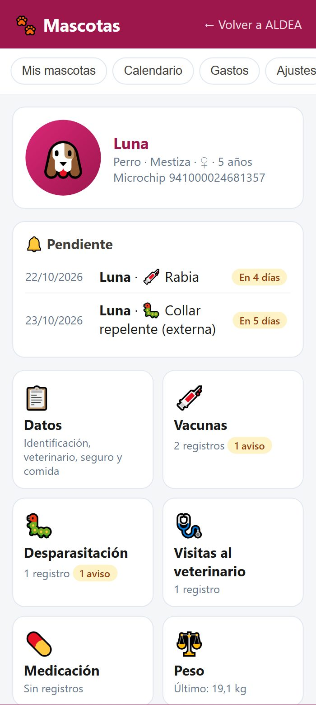
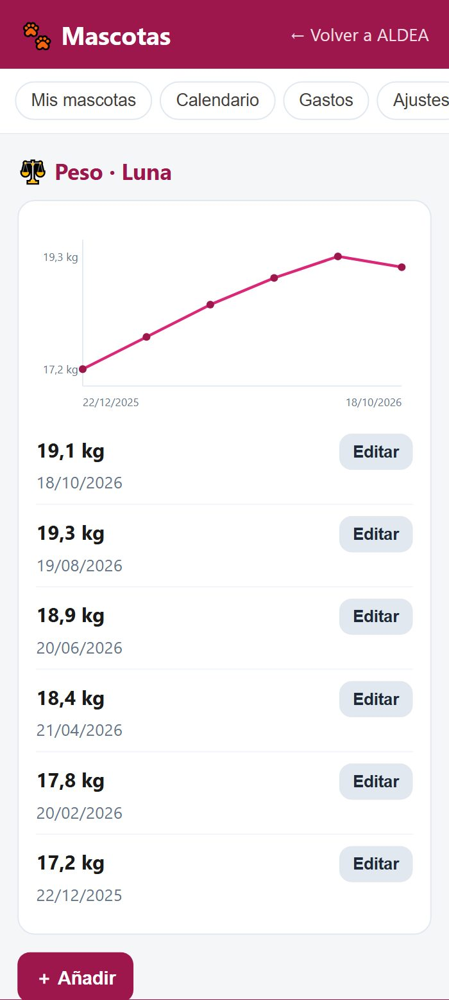
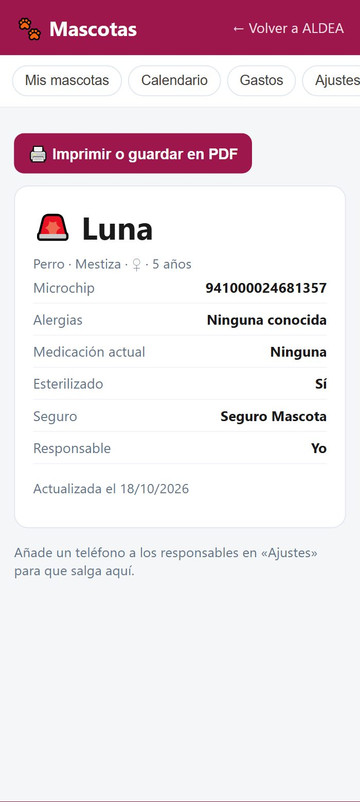

Manual › 📱 Manual de las aplicaciones
5.6 🐾 Mascotas
- ＋ Añadir mascota: nombre, especie, raza, sexo, nacimiento (puede ser aproximado), microchip, veterinario, seguro, alimentación y alergias. Perros y gatos tienen plantillas de vacunas y antiparasitarios (con leishmaniosis); conejos y hurones, una pauta básica; el resto de especies, a mano.
- Cada mascota tiene sus apartados: Vacunas, Desparasitación (la próxima se calcula según el producto), Visitas al veterinario (con informes adjuntos), Medicación, Peso con gráfica, Síntomas con foto, Celos, Gastos y, si los activas, Cuidados (peluquería, uñas, arenero, paseos…).
- Avisos: en Mis mascotas ves lo que toca en los próximos 7 días (vacunas, desparasitaciones, medicación, seguro, revisión anual). La antelación se cambia en Ajustes. También hay un Calendario.
- Para imprimir o guardar en PDF: 🚨 Ficha de emergencia (para la guardería, un cuidador o si se pierde), 📢 Cartel «Se busca» e 📄 Informe para el veterinario.
- Gastos por mascota, categoría y año, y exportación a Excel.
- Si una mascota fallece o cambia de hogar, 🕊️ Ya no está en casa: no se borra nada y pasa a Recuerdos.


